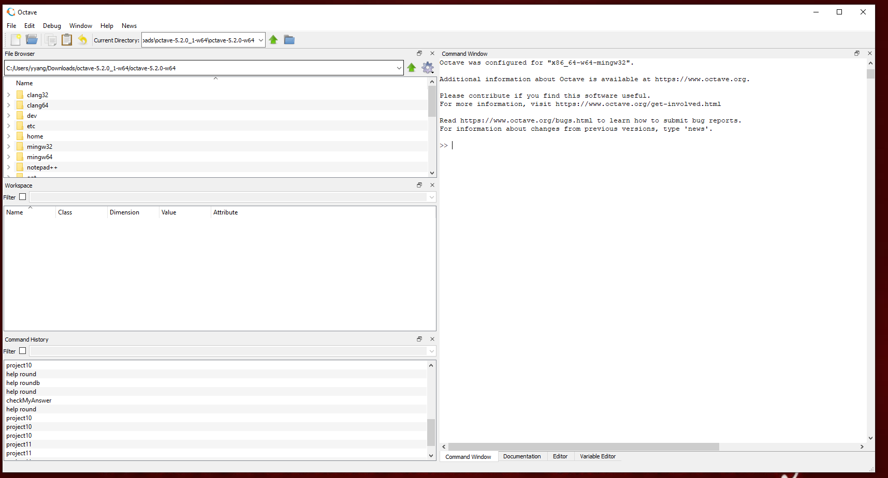
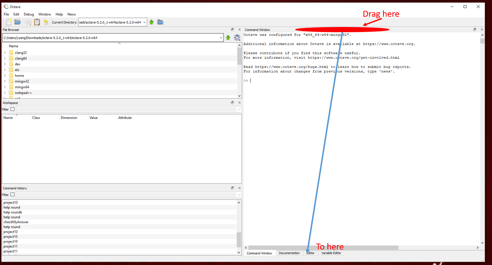
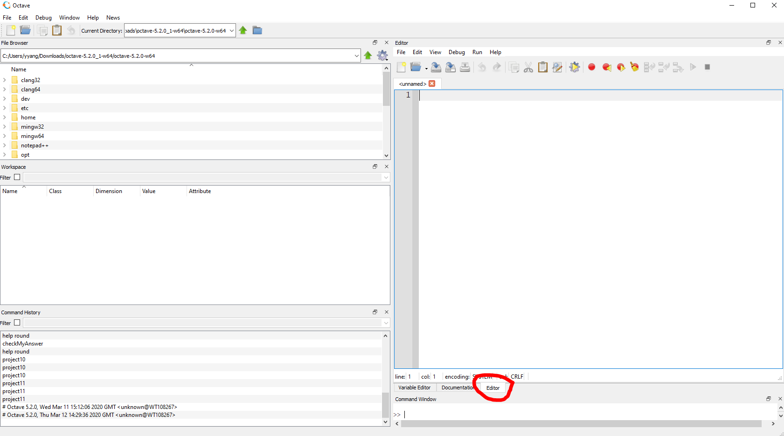
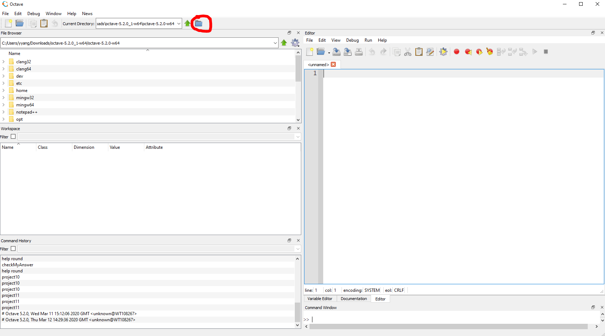

How to Use GNU Octave¶
Download Octave¶
Click Octave to download Octave to your PC. If you use macOS/Linux, please go to the download page of Octave to find the right one for you: https://www.gnu.org/software/octave/#install
Install Octave¶
After you download the installer, double click it to install Octave. If you have any trouble about installing, please contact me individually.
How to Use Octave¶
After you install Octave successfully, launch this app, you will see a user interface like this:
This UI is similar to MatLab. If you would like to get the same layout as MatLab, do following steps.
Drag the command window to bottom¶
Click Editor Tab¶
Click Browse Button¶
Find the project folder you downloaded, then you can start the project.
Postscript¶
If you follow the instruction, you should be able to use Octave now. If you still have questions, please feel free to contact me by WT Email.